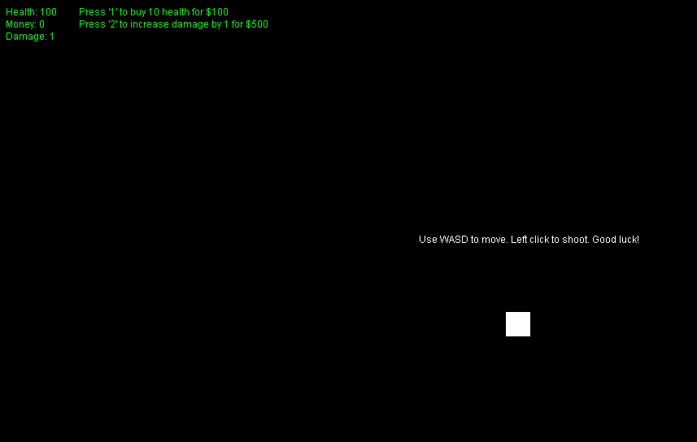

1 / 3

A view of a project I made
2 / 3

A close up of the main character
3 / 3

Showing a majority of the map
The following slideshow displays a project I made in my senior year of high school, in the spring of 2017. I made this project in Java to test my abilities to use graphics and perform animations. This was my most ambitious project, but I hope to create even more impressive ones in the near future. Visit the download page to check it out!
In my freshman year of college, I made many projects for my object-oriented programming classes (No pun intended). I learned about ADT's and made projects related to Maps, LinkedLists, Stacks, Queues, PriorityQueues, BinarySearchTrees, and Graphs. In addition, I learned about multi-threading and sorting algorithms. I learned about algorithmic complexity and how to find it for algorithms. Lastly, I learned TeX for beautifully formatted documents.
I spent 6 months as a contracted intern with the U.S. Food and Drug Administration working with a team researching noroviruses. I developed software for them to deal with large amounts of data and to extract information from third-party software. I have an acknowledgement in the paper the team worked on for my help.
This was a quick little game I made to test my capabilities in Java with graphics and math. It is a fun game, and try to see how far you can get!


I made this game as a project for my Fall 2017 Computer Science class. It is written in Processing, which is similar to Java and took me less than an hour for the core functionality and a little bit more for the rest of the features.
On top of my classes, extracurriculars, family and social life, I made all these projects and this website in my free time. I am committed to learning new skills and I hope to apply them in the real world everyday. If you like what you see, or you are interested in more, do not hesitate to contact me!